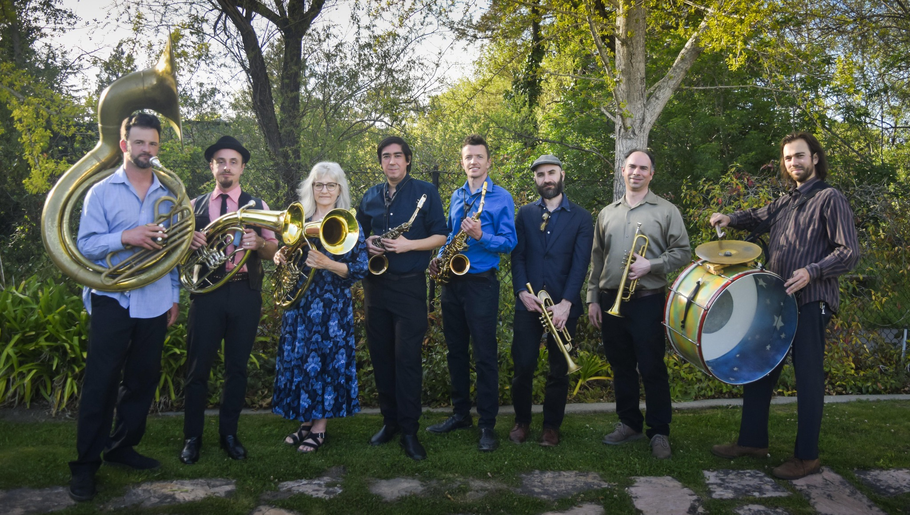
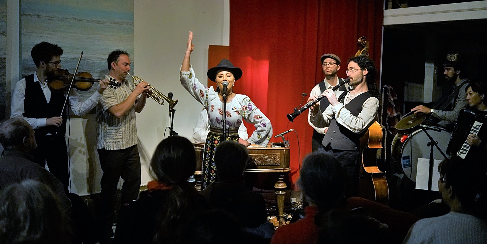
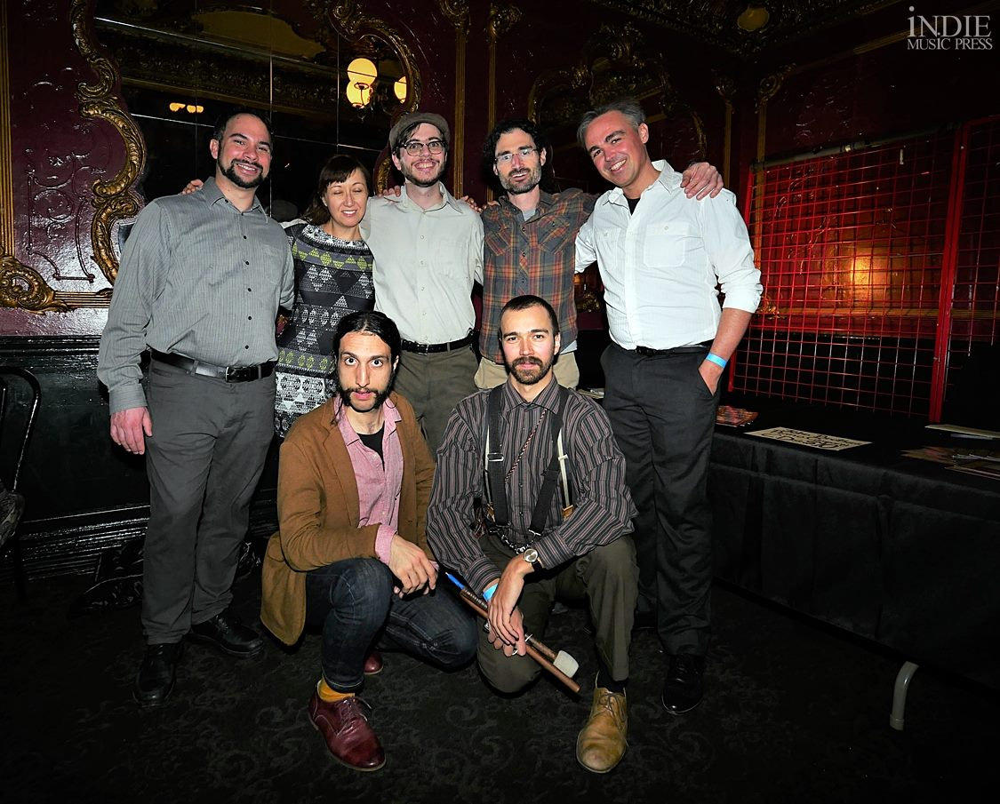
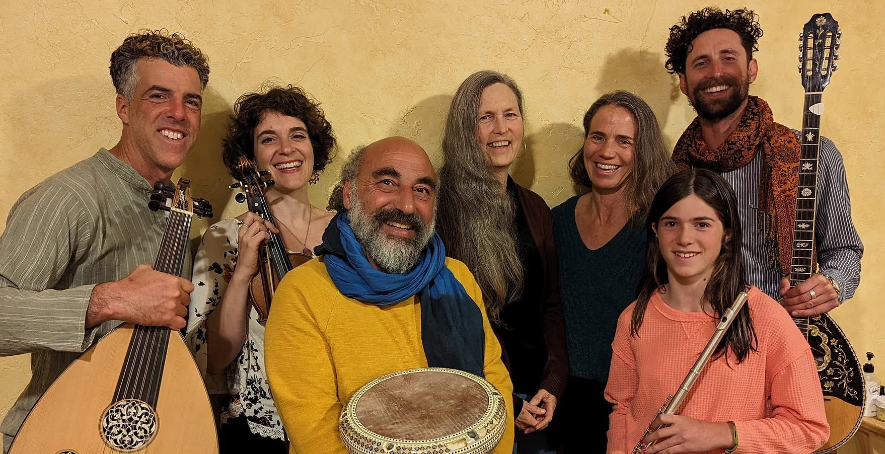
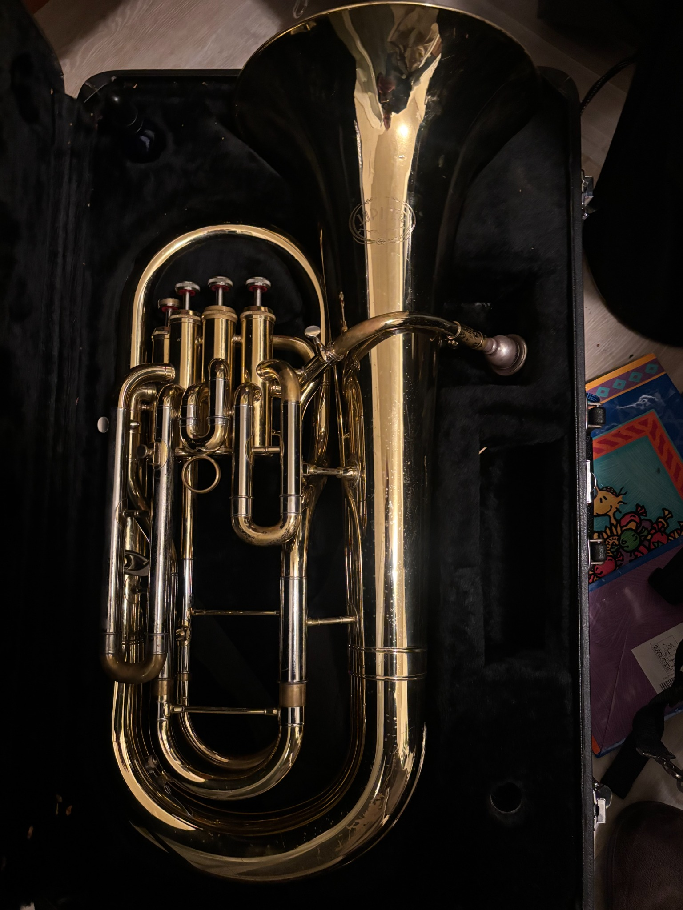

TrumpetMy primary brass instrument—used across klezmer, Balkan, Eastern European and ensemble work for melody, improvisation and a strong singing tone.
Performance and ensemble photographs alongside Peter’s primary instruments. Click any thumbnail to open the full-size image.





Each instrument opens a different part of the repertoire—from the projecting, vocal quality of trumpet to the intimacy of oud and the warm low brass of euphonium.


I like moving between brass and strings because each asks for a different kind of listening. Trumpet can lead a room; oud can draw it inward. Euphonium lets me shift roles—from melody to support—depending on the ensemble and tradition.